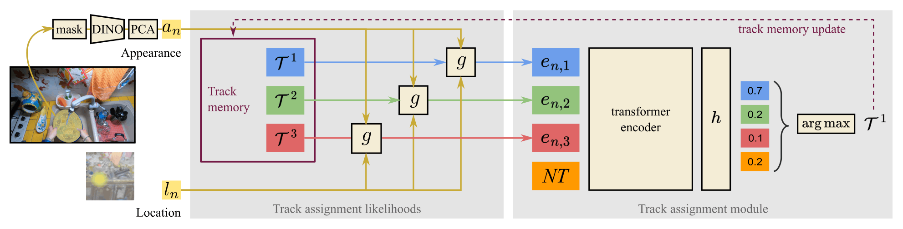

The recently established 'Out of Sight, Not out of Mind' (OSNOM) task for egocentric videos focuses on tracking objects that are moved by the camera wearer online, maintaining knowledge of instance locations throughout the video even when they leave the field of view or become heavily occluded. In this paper, we propose the first learning-based solution to the OSNOM task: Whareformer, a transformer-based model with two components: an updatable memory of established tracks and a track assignment module that associates observations with existing tracks in a feed-forward manner. Whareformer jointly reasons over evolving object appearance (what) and updated 3D location (where), and employs a dedicated New Track token to reason about novel objects.
Thanks to its design choices of using relative distances and evolving track representations, Whareformer is trained on a small set of 56 videos but achieves SOTA performance on 260 long test videos from three datasets: EPIC-KITCHENS-100 (unseen videos), IT3DEgo, and HD-EPIC, with significant absolute improvements over prior work.

Whareformer architecture. The current observation is represented by appearance $a_{n}$ and location $l_{n}$ descriptors, which are fed into our first module. Using a memory of tracks constructed so far, it produces embeddings representing the likelihood that this observation corresponds to each track. These embeddings, combined with a new track ($\mathrm{NT}$) token, are fed to a transformer that produces the final track assignment. This prediction is used to update the track memory.
We provide video-based qualitative results for all evaluated datasets. For EPIC-KITCHENS-100, we provide a qualitative sample illustrating complex, multi-object interactions and tracking. We also supply videos showcasing IT3DEgo's diverse, unseen environments and HD-EPIC's sparse, challenging sequences. Each video is shown in a side-by-side format, with LMK on the left (state-of-the-art for the OSNOM task) and Whareformer on the right, enabling direct comparison of their tracking and 3D localisation behaviour. For visualisation, we colour an object's bounding box green if the current observation has the same track ID as it had for the object's first observation. Otherwise, we colour the bounding box orange, indicating that an ID switch has occurred, but the original track can still localise the object within a 30cm threshold (corresponding to the distance threshold used for the PCL evaluation). However, if the original track cannot localise the object within this threshold, we colour the box red, capturing both "what" and "where" errors. Across all datasets, Whareformer demonstrates fewer errors and greater temporal stability than LMK.
@InProceedings{chalk2026whareformer,
title={Whareformer: Learning to Track What is Where in Long Egocentric Videos},
author={Chalk, Jacob and Sinha, Saptarshi and Damen, Dima and Kalantidis, Yannis and Larlus, Diane},
booktitle={European Conference on Computer Vision (ECCV)},
year={2026}
}
This work uses public datasets. Research at Bristol is supported by EPSRC UMPIRE EP/T004991/1, EPSRC PG Visual AI EP/T028572/1. J Chalk and S Sinha are supported by ESPRC Doctoral Training Program (DTP). We acknowledge the usage of GPU Node hours provided by the Isambard-AI National AI Research Resource (AIRR) granted as part of the AIRR Gateway project "HOI Foundational Model from Egocentric Data" (Dec 2025 - Mar 2026) and the Sovereign AI Unit call project "Gen Model in Ego-sensed World" (Aug 2025 - Nov 2025).